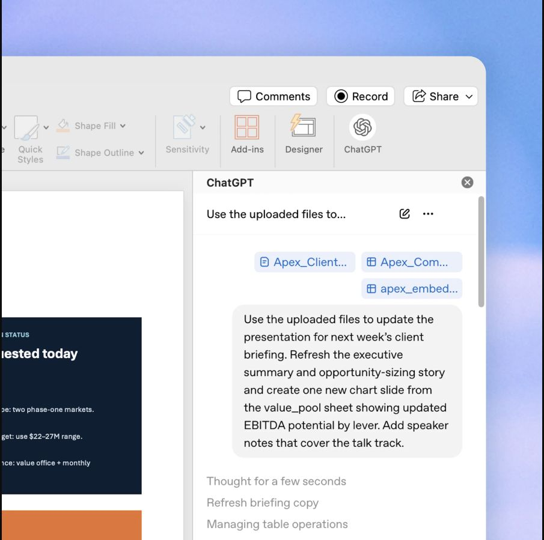
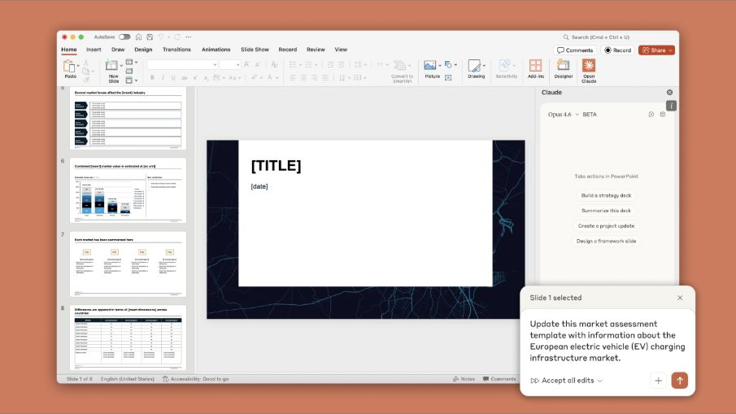

はじめに
発表スライドの本質は、内容とその伝え方を考えることです。配置や細かな大きさ・位置の調整は本質的な作業ではありません。そこで、内容は自分で考え、配置やデザインは AI にやってもらい、修正の指示を出しながらスライドを作っていきます。
AI のスライド生成ツールは、それっぽいものは作れますが、細部が間違っていたりと適当な印象があります。発表のように時間が限られ、伝えられる内容にも限りがある状況では、良いスライドにならないことが多いです。少なくとも全部を AI 任せにすると、自分の身にならず、時間内に伝えたいことが伝わらない発表になりやすいので、おすすめしません。
対象読者
研究室の学生。ゼミ発表・中間発表・学会発表などのスライドを、AI を使って速く、質を落とさずに作りたい人向けです。
このページで分かること
- AI に作らせる前に、自分で決めておくこと
- 曖昧なメモを、チャットAIと推敲して指示にする方法
- AI でスライドを作る3つの方法と選び方
- ステップごとに動くアニメーションの入れ方
- 修正指示の出し方と、AI に確認を回させる方法
全部を AI 任せにしたときによくある失敗
- 1枚に情報を詰め込みすぎて、持ち時間内に話しきれない。
- それっぽい図だけど、意味が分かりにくい or 内容とズレている。
- 教科書的な一般論の流れになり、自分の研究で何を主張したいのかが見えない。
- 自分で考えていないので、質疑で突っ込まれたときに答えられない。
どれも、内容を自分で決めてから AI に渡せばある程度防げますし、修正していけば自分が1から書くより、速く良いスライドが作れます。
目次
推奨する流れ
質の高いスライドを、なるべく AI を活用しながら作るための進め方です。
最初からスライドを作り出さない
発表資料でよくある失敗は、全体の見通しが甘いままスライドを作り出してしまうことです。まずは文章で全体を構成し、文章の状態で内容を推敲します。説明する順番は良いか、話が飛んでいないか、といった点はスライドよりも文章のほうが確認しやすいです。
1. 研究背景 組合せ最適化を導入する。 巡回セールスマン問題、スケジューリング問題の具体例を見せる。 2. 〇〇
文章で会話するほうが修正の負荷が低く、LLM にも扱いやすいです。また、文章で書いておけば、AI へのスライド作成の指示としてそのまま使えます。
推敲はブラウザの ChatGPT でやると利用枠の節約になる
この状態でブラウザの ChatGPT と会話して構成を修正していくと、利用枠の節約にもなります。ChatGPT ではチャットと Codex の利用枠が別だからです。Claude はチャットと Claude Code で利用枠を共有しているので、この効果はありません。
通し例：研究背景スライドができるまで
実際に作った発表「機械学習を使った組み合わせ最適化」の、研究背景のスライド1枚を例に、1章の流れを順に見ていきます。この例は「② VS Code＋Quarto」（3章）で作っています。
ステップ1・2：曖昧なメモを、チャットAIと推敲する
左が最初に書いたメモです。思いついたままに書いたので、波線のように、自分の頭の中では分かっていても読む人によってどうとでも取れる書き方が残っています。このまま渡すと、AI が勝手に解釈して作ってしまいます。
そこでチャットAIに曖昧な箇所を指摘・質問させ、答えながら直したのが右のメモです。同じ番号が、曖昧だった箇所と直した箇所の対応です。
このメモをスライド作成の指示として使いたい。曖昧で、人によって解釈が変わる箇所を挙げて、どう決めればいいか質問して。
1. 研究背景 社会にある実問題から 組合せ最適化の概念を導入。 html -- 左右で2つの問題例をだす。それぞれのアニメーションの下に 決めるもの、制約、目的 を書く。 左側 配送経路 四角の中に倉庫一つと家みたいなのを複数個用意、 倉庫から線が伸びて経路が作られるのを模擬。 右側 何か物の加工順 JSPかFSSPみたいな問題を例示。 作るもの3つで、作業機械3つ A,B,Cで 作るものはそれぞれ 作業をもち、色でわかる感じ。 横軸時間、縦軸機械 いい感じに順番に詰め込まれていく。 待ち時間的なことをやったりして単調にならないように。 --
対象読者：組合せ最適化やNCOを初めて学ぶ人。 伝えたいこと：従来の解法と比較しながら、学習済みモデルを繰り返し利用するNCOの考え方を紹介する。 公開範囲：公開済みのAttention Model・POMO・BOPOまで。独自の並列モデル・実験結果・氏名は含めない。 ## 1. 研究背景 社会にある実問題から、組合せ最適化を導入する。 HTML -- 左右に2つの問題例を出す。それぞれのアニメーションの下に「決めるもの・制約・目的」を書く。 左側：配送経路。四角の中に倉庫1つと家を複数置き、倉庫から線が伸びて経路が作られる。 右側：ものの加工順。ジョブショップを例にし、製品3つと機械A・B・Cを用意する。製品ごとの作業を色で区別し、横軸を時間、縦軸を機械にする。 初期状態では配送先と機械の時間軸だけを見せる。stepごとに経路を伸ばし、作業を時間軸へ配置する。作業の長さと機械の使用順は変化をつけ、同じ機械での重なりと製品内の工程順を守る。 最後には配送経路が倉庫へ戻り、全作業が配置される。 -- 続いてTSPを定義し、数理最適化とヒューリスティクス・局所探索を紹介する。
特に 3 の「いい感じに詰め込まれていく」は、初期状態・step ごとの変化・最後の状態に分けて書くと、そのままアニメーションの指示になります（4章）。あわせて、先頭に対象読者・伝えたいこと・公開範囲を書き足しています。
ステップ3：メモをそのまま指示にする
推敲したメモを decks/nco-intro/memo.md に保存し、VS Code の AI に頼みます。
decks/nco-intro/memo.md のスライド案で、新しいスライド「nco-intro」を作って。
左のタブで「メモ」と「AI が書いた qmd」を切り替えられます。右は完成したスライドから研究背景の1枚を切り出したもので、実物のアニメーションをループ再生しています。
## 1. 研究背景 社会にある実問題から、組合せ最適化を導入する。 HTML -- 左右に2つの問題例を出す。それぞれのアニメーションの下に「決めるもの・制約・目的」を書く。 左側：配送経路。四角の中に倉庫1つと家を複数置き、倉庫から線が伸びて経路が作られる。 右側：ものの加工順。ジョブショップを例にし、製品3つと機械A・B・Cを用意する。製品ごとの作業を色で区別し、横軸を時間、縦軸を機械にする。 初期状態では配送先と機械の時間軸だけを見せる。stepごとに経路を伸ばし、作業を時間軸へ配置する。作業の長さと機械の使用順は変化をつけ、同じ機械での重なりと製品内の工程順を守る。 最後には配送経路が倉庫へ戻り、全作業が配置される。 --
decks/nco-intro/memo.md（研究背景の部分）
## 研究背景 {#background} 配送の順番や作業の順番など、社会には組合せを考えて決める問題が多くある。 ```{=html} <iframe src="../../html/social-problems/index.html" class="model-animation" title="配送経路とスケジューリング"></iframe> ``` 制約を満たす組合せから、目的関数が最もよいものを選ぶ問題を**組合せ最適化**と呼ぶ。[@dantzig1954; @jobshop]
decks/nco-intro/slides.qmd — アニメーション本体は html/social-problems/index.html に別ファイルとして作られ、iframe で読み込んでいます。
このあと修正の指示を出して仕上げます（6章）。
3つの作り方
どの方法も、ChatGPT か Claude の月額サブスクリプションに入っていることを前提にしています。
① PowerPoint内でAIを使う
PowerPoint を開き、ホームの「アドイン」から「ChatGPT」か「Claude」と検索して追加し、サブスクリプションのアカウントでログインすれば使えます（公式：ChatGPT for PowerPoint / Claude for PowerPoint）。


主な用途は、既存スライドのレイアウト修正、スライドの追加、テキストの整理、テンプレートに合わせた生成です。
ChatGPT Work に PowerPoint 本体を操作させる
デスクトップアプリ版の ChatGPT Work には、パソコンの画面を見ながらアプリを操作する機能があり、PowerPoint も操作の対象になります。アドインからは難しい操作でも、人がマウスでやるのと同じ手順で PowerPoint を直接操作させられます。4章の HTML アドインの配置なども、この方法なら任せられる可能性があります（未検証）。
画面を見ながら操作するので、テキストを直接編集する方式に比べると時間と利用枠を多く使います。
② VS Code＋AIコーディングエージェント
VS Code や GitHub を使ったことがある人におすすめの方法です。Markdown からスライドを作るツール（Quarto / Marp）を使います。2章の通し例はこの方法で作っています。
- qmd・HTML・CSS などのテキストを編集するだけなので、AI の得意な文章の編集で完結する。画像をやり取りしなくてよく、利用枠の消費も少ない。
- 細かい重なりや座標の微調整は多少苦手。ただ、重なりやはみ出しはスクリプトで自動検査させれば AI が自分で直せる（6章）。
- HTML のアニメーション以外は、qmd ファイルを自分で直接直せばよいので簡単。Git で差分を管理でき、前の版に戻すのも簡単。
Quarto で HTML アニメーションを埋め込んだスライドを作る基盤を、murata-lab/quarto-html で公開しています。1つのコマンドで、オフラインでも見られる単一の HTML と PDF を出力し、ビルドのたびにはみ出しや重なりを自動検査します（完成したスライド）。
始め方
- VS Code をインストールし、Codex か Claude Code の拡張機能を入れてサブスクリプションのアカウントでログインする
- Quarto と uv をインストールする
- リポジトリを clone して VS Code で開き、初回だけ準備のコマンドを実行する（AI に「README の準備をやって」と頼んでもよい）
ターミナル
git clone https://github.com/murata-lab/quarto-html.git uv sync uv run playwright install chromium
- 推敲したメモを AI に渡して、スライドを作らせる
AI への指示
このスライド案で、新しいスライド「my-talk」を作って。 （ここに推敲したメモを貼る）
- AI が返す
output/my-talk.htmlとoutput/my-talk.pdfを開いて確認する
情報が足りない場合や説明の流れに問題がある場合は、作り始める前に AI が質問してきます（リポジトリ内の AI 向けルールにそう書いてあるため。6章）。
qmd の書き方（最小限）
## 研究背景 配送の順番や作業の順番など、社会には組合せを考えて決める問題が多くある。 ```{=html} <iframe src="../../html/social-problems/index.html" title="配送経路とスケジューリング"></iframe> ``` 制約を満たす組合せから、目的関数が最もよいものを選ぶ問題を**組合せ最適化**と呼ぶ。[@dantzig1954]
#が章、##が1枚のスライド。箇条書きや太字は普通の Markdown と同じ。[@キー]で引用すると、ページ下に書誌情報、最後に参考文献ページが自動で入る。- 基本は AI が書くので覚える必要はない。文言を少し直す程度なら自分で qmd を直接編集するほうが早い。
研究の情報を外部に持ち出せない場合
③ AI専用のスライド作成環境
AI との対話からスライドを生成し、専用エディタで修正した後、PowerPoint へ書き出す方法です。VS Code などの環境を用意せず、自然言語での修正を中心に作れるのが利点です。
- ChatGPT Work
- スライド用のフォルダを作り、Work でプロジェクトを作成してそのフォルダを指定します。作業結果はそのフォルダに保存されます。使いたい PowerPoint のテンプレートがあれば、フォルダに入れて「これを参照して」と書けば使ってくれます。パソコン内のフォルダを直接編集するのはデスクトップアプリ版のみです。
- ChatGPT Slides
- 会話や資料からスライドを生成し、テキスト・図形・表などを専用のエディタで編集できます。完成したら PPTX に書き出して PowerPoint で開けます。
- Claude Artifacts（Slides）
- claude.ai で、会話や資料からスライドを作成し、そのまま編集・発表・PowerPoint への書き出しができます。
動くHTMLアニメーションを入れる
ステップごとに動く HTML アニメーションをスライドに入れる場合、方式によって相性が違います。
| Quarto（②） | PowerPoint（①・③） | Marp（②） | |
|---|---|---|---|
| 埋め込み方法 | iframe で埋め込める | HTML を表示するアドインが必要 | 設定で HTML を許可する |
| スライド送りとの連動 | 連動させやすい | 実装と動作確認が必要 | 追加の実装が必要 |
研究発表でアニメーションを多用するなら、Quarto がいちばん扱いやすいです。大事なのは、HTML を埋め込めるかどうかより、スライド送りの操作とアニメーションのステップ送りを一体にできるかです。→ を押すたびに経路が1本ずつ伸び、最後のステップのあとに押すと次のスライドへ進む、という操作です。
作り方の例
2章の通し例がそのまま例になっています。メモの HTML -- … -- で囲んだ部分がアニメーションの指示で、初期状態・各ステップ・最後の状態（色付きの行）を書いておくと、AI がステップ送りに対応したアニメーションを作ります。
HTML -- 左右に2つの問題例を出す。それぞれのアニメーションの下に「決めるもの・制約・目的」を書く。 左側：配送経路。四角の中に倉庫1つと家を複数置き、倉庫から線が伸びて経路が作られる。 右側：ものの加工順。ジョブショップを例にし、製品3つと機械A・B・Cを用意する。製品ごとの作業を色で区別し、横軸を時間、縦軸を機械にする。 初期状態では配送先と機械の時間軸だけを見せる。stepごとに経路を伸ばし、作業を時間軸へ配置する。作業の長さと機械の使用順は変化をつけ、同じ機械での重なりと製品内の工程順を守る。 最後には配送経路が倉庫へ戻り、全作業が配置される。 --
初期状態 → step ごとの変化 → 最後の状態 の3つを書くのがコツ
## 研究背景 {#background} 配送の順番や作業の順番など、社会には組合せを考えて決める問題が多くある。 ```{=html} <iframe src="../../html/social-problems/index.html" class="model-animation" title="配送経路とスケジューリング"></iframe> ``` 制約を満たす組合せから、目的関数が最もよいものを選ぶ問題を**組合せ最適化**と呼ぶ。[@dantzig1954; @jobshop]
qmd 側は iframe を1行置くだけ。動きは html/social-problems/ の中に書かれる。
スライド送りとアニメーションを連動させる仕組み
Quarto 標準の Reveal.js でスライドを作る場合は、段階表示（fragment）が出たときのイベント（fragmentshown / fragmenthidden）を受け取り、iframe の中のアニメーションへステップを伝えます。
quarto-html リポジトリでは、Reveal.js の標準の操作を使わず、小さな専用プレイヤーがステップを管理しています。アニメーション側は、次の形で「ステップ数」と「そのステップでの描画」だけを書きます。
registerAnimation({
steps: 2,
render(step) {
// stepだけから描画を決める。0→2や2→0にも対応する。
}
});- 親のプレイヤーが ← / → でステップを進め、最後のステップを過ぎると次のページへ進む。
renderはステップ番号だけから描画を決めるので、戻る操作や途中のステップへの直接移動にも対応できる。- PDF には各ページの最後のステップの状態が出力される。
新しいアニメーションは uv run scripts/slides.py animation <図名> で雛形を作れます。
PowerPoint に HTML を埋め込む場合の注意
- HTML の表示にはコンテンツアドインを使います。Microsoft 製の Web Viewer アドインは2024年に提供が終わっているので、別の対応アドインを使うか、自分で Office アドインを作る必要があります。使うアドインによって、動かせる HTML やライブラリに制約があります。
- HTML 側をクリックして進めるだけなら比較的簡単です。PowerPoint の → キーとアニメーションの進行を一体にするには、実装と動作確認が必要です。
- Office アドインは Mac でも使えますが、コンテンツアドインの動作には Windows との違いがあります。発表に使うパソコンで事前に確認してください。
どれを選ぶか
| やりたいこと | おすすめ |
|---|---|
| 既存の PowerPoint 資料を AI で直したい | ① PowerPoint＋アドイン |
| 研究発表で数式やアニメーションを多く使いたい | ② VS Code＋Quarto |
| Markdown でシンプルなスライドを素早く作りたい | ② VS Code＋Marp |
| コードを触らず、AI と会話しながら完成させたい | ③ ChatGPT Work / Slides / Claude Artifacts |
①と②は組み合わせることもできます。たとえば②でスライドを作って PowerPoint に書き出し、最後に①のアドインで部分的に直す、という使い方です。
もう少し細かい比較
| 方式 | 既存PPTXの修正 | 新規作成 | 複雑な図・アニメーション | マウスでのレイアウト調整 | 配布先での再現性 |
|---|---|---|---|---|---|
| ① PowerPoint＋アドイン | ◎ | ○ | △ | ◎ | △（HTMLを埋め込んだ場合） |
| ② Quarto | △ | ◎ | ◎（HTML） | △ | ◎ |
| ② Marp | △ | ◎ | ○（HTML） | △ | ○ |
| ③ Work / Slides / Artifacts | △〜○ | ◎ | ○ | ○ | ○ |
機能の仕組みから見た目安です。
仕上げ：修正指示のコツ
最初に生成されたスライドが、そのまま使えることはまずありません。仕上げは「修正の指示を出す → 直ったか確認する」の繰り返しです。これを毎回人が目で見てやると、時間がかかるうえに見落としも出ます。そこで、先に確認基準を作っておき、確認と修正の繰り返しを AI 自身に回させます。
6-1. 人が見るのは「中身」だけにする
- 文字のはみ出し
- 要素の重なり
- 文字が小さすぎる
- 図と本文が対応していない
- 余白のバランスが悪い
- 色が見分けにくい
- 説明が正しいか
- 話の流れが自然か
- 時間内に話せるか
1つ目と2つ目は、基準さえ書いておけば AI が自分で確認して直せます。quarto-html では、ビルドのたびにはみ出し・重なり・ブラウザのエラーなどを自動検査し、失敗すると AI が通るまで直します。人は3つ目に集中できます。
6-2. 基準を育てて、AI が読むファイルに書いておく
同じ指摘を2回したら、基準にするのがコツです。同じ種類のミスが別のスライドでも起きたら、確認基準として書き足させます。発表を重ねるほど最初の生成の質が上がり、修正の回数が減っていきます。
今回の修正内容を、今後も守るべきルールとして AGENTS.md に追記して。 機械的に検査できるものは、ビルド時の検査にも追加して。
| ファイル | 書くこと |
|---|---|
AGENTS.md | どの発表にも共通するルール。作業の順番、使ってよいコマンド、完了の条件 |
スキル（.agents/skills/…/SKILL.md など） | スライド作成専用の、より細かい手順と基準 |
decks/<名前>/memo.md | その発表だけの基準。対象読者、公開範囲、デザインの指示、例外として認めた重なり、原典の確認記録 |
Codex は AGENTS.md を自動で読みます。Claude Code は CLAUDE.md を読むので、CLAUDE.md に @AGENTS.md と1行書いておくと、両方で同じルールを使えます。
AGENTS.md とスキルの例
quarto-html リポジトリの AGENTS.md は、次の数行だけです。細かい手順はスキルのファイルに分けています。
# Quartoスライド制作 このリポジトリのスライド制作では .agents/skills/quarto-slides/SKILL.md を読む。 探索は対象の decks/<名前>/memo.md → slides.qmd → 参照される html/ の順に絞る。 スクリプトは uv run。npmは使わない。出力HTML/PDFを直接編集しない。
- スライド案の対象読者・結論・説明順・必要なデータを確認する。 情報が不足する、流れが不自然、公開範囲が不明なら、質問し、回答前にスライドを作り始めない。 - 本文は最小限とし、発表者ノートを増やさない。 引用は [@key]、出典を reference.bib に登録する。原典で事実・実験条件を確認する。 - アニメーションの render は任意のstepへ直接移動・巻き戻しできる決定的な描画にする。 タイマーで勝手に進めない。 - 編集後は必ずビルドを実行し、HTMLとPDFの両方を出力する。失敗を修正して再実行する。 自動検査だけに頼らず各ページ画像とPDFを見て、文字・図・フッターの重なりや欠けを確認する。 - 完了報告はユーザーがすぐ見られるHTMLとPDFのリンクを短く示す。 実行できなかった検証は明記する。
「足りなければ質問してから作る」と「確認できなかったことは報告に書く」が特に効きます。
ループがうまく回らないとき
- 同じ修正を行ったり来たりする：基準同士が矛盾していることが多いです。どちらを優先するかを書くか、スライドを分けることを許可します。
- 基準が曖昧で終わらない：「見やすく」は判定できません。「本文〇pt以上、1枚〇行以内」のように数値にします。
- 意図した重なりまで直そうとする：意図した重なりは、例外としてメモに明記します。
- いつまでも終わらない：「3回直しても通らなければ、止めて状況を報告して」と上限を決めておきます。
6-3. 修正指示の書き方
ループで直らない部分（中身やデザインの好み）は、どのスライドの、どの要素を、どう直すかを書いて指示します。
| 悪い指示 | 良い指示 |
|---|---|
| いい感じにして | 3枚目の右の図を、左の本文と上端をそろえて |
| アニメーションを直して | 右のスケジュールで、機械Bに2つの作業が同時に入っている。同じ機械で作業が重ならないようにして |
| デザインを変えて | 図の配置と動きは変えずに、表紙・章扉・見出し・表・引用の外観だけ青系にして |
- 変えてほしくないものを明示する：AI は頼んでいない部分まで「ついでに」直すことがある。「図の配置・動きは維持して、外観だけ変えて」のように書く。
- 理由も添える：「プロジェクターが暗いので、薄い背景の上の文字は濃くして」のように書くと、他の箇所にも同じ考え方を当てはめてくれる。
- 中身の修正はメモに戻ってから：先に
memo.mdを直し「メモに合わせてスライドを更新して」と頼む。ずれると AI が古いメモに戻してしまうことがある。 - 一度に頼むのは3〜5個まで。誤字や数px の位置調整は、自分で直接直すほうが早い。
- 数値や引用は自分で原典を確認する。AI は自信ありげに間違えることがある。
よく使う修正指示の例
# レイアウト 〇枚目の図を左右2列にして、左に図、右に箇条書きを置いて。 引用がページ下の線と重なっている。引用を線より上に出して。 # 文字量 〇枚目は情報が多い。言いたいことを1つに絞って、残りは次のページに分けて。 # アニメーション 〇枚目のアニメーションを、最初は〇〇だけ見せて、→ で1つずつ△△が出るようにして。 戻る操作をしたときに、前のステップの状態に正しく戻るか確認して。 # 全体 全ページを見て、本文と図の内容が合っていない箇所を挙げて。直す前に一覧を見せて。 対象読者を学部生として、説明なしで使っている専門用語を挙げて。
よくある質問
- 図やグラフはどう入れる？ 数式は？
- 全部 AI に頼めば解決します。データのファイルを渡して「このデータで〇〇のグラフを作って」、数式は「〇〇の式を入れて」と頼むだけです。
- 作ったスライドを共同研究者や先生に共有したい
- ②なら HTML と PDF が出力されるので、PDF を送るか、GitHub Pages で公開します（公開範囲に注意）。①・③は PowerPoint のファイルとして共有できます。
- 未発表のデータを AI に渡してもいい？
- 研究室や共同研究のルールに従ってください。外部に出せない場合は、ローカルLLM を使う方法があります（3章の②）。
まとめ
- 内容と伝え方は自分で考え、文章の段階で推敲する。
- 推敲した文章をそのまま指示にして、配置やデザインは AI に任せる。
- 確認基準を作って AI に確認と修正を繰り返させ、人は中身の判断に集中する。